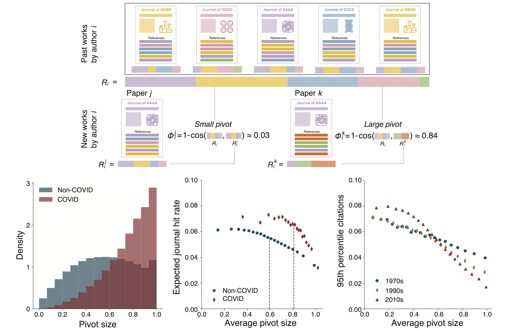
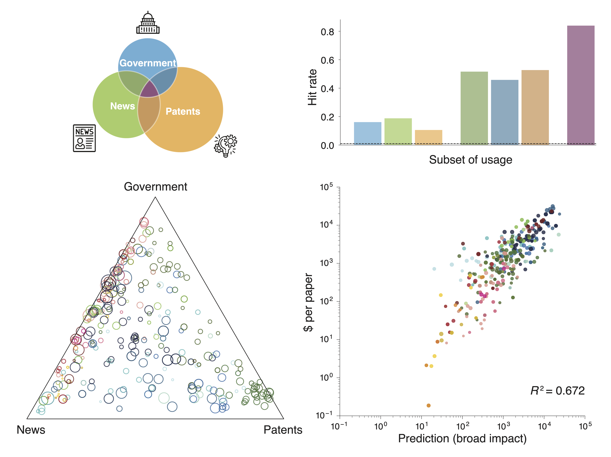
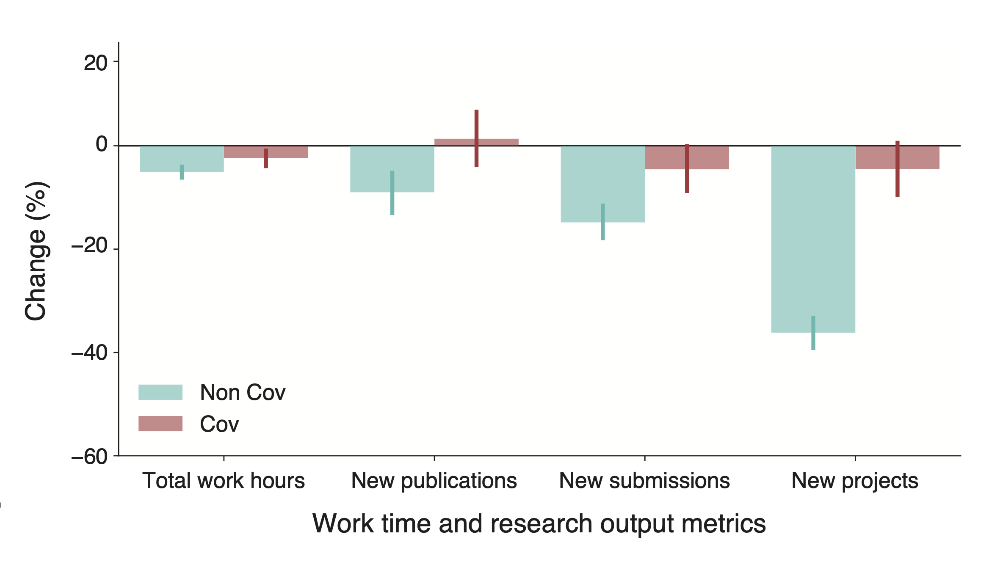

Working papers
Adaptability and the pivot penalty in science
Ryan Hill*, Yian Yin*, Carolyn Stein*, Dashun Wang and Benjamin F. Jones (*: equal contributions)
Under review SSRN 3886142
|  | The ability to confront new questions, opportunities, and challenges is of fundamental importance to human progress and the resilience of human societies, yet the capacity of science to meet new demands remains poorly understood. Here we deploy a new measurement framework to investigate the scientific response to the COVID-19 pandemic and the adaptability of science as a whole. |
Featured publications
Public use and public funding of science
Yian Yin, Yuxiao Dong, Kuansan Wang, Dashun Wang and Benjamin F. Jones
Nature Human Behaviour, July 2022. 10.1038/s41562-022-01397-5
NBER Working Paper: w28748
|  | Knowledge of how science is consumed in public domains is essential for a deeper understanding of the role of science in human society. While science is heavily supported by public funding, common depictions suggest that scientific research remains an isolated or 'ivory tower' activity, with weak connectivity to public use, little relationship between the quality of research and its public use, and little correspondence between the funding of science and its public use. This paper introduces a measurement framework to examine public good features of science, allowing us to study public uses of science, the public funding of science, and how use and funding relate. Specifically, we integrate five large-scale datasets that link scientific publications from all scientific fields to their upstream funding support and downstream public uses across three public domains – government documents, the news media, and marketplace invention. |
Potentially long-lasting effects of the pandemic on scientists
Jian Gao, Yian Yin, Kyle R. Myers, Karim R. Lakhani and Dashun Wang
Nature Communications, 12(1): 1-6, Oct 2021. 10.1038/s41467-021-26428-z
|  | Extensive research has documented the immediate impacts of the COVID-19 pandemic on scientists, yet it remains unclear if and how such impacts have shifted over time. Here we compare results from two surveys of principal investigators, conducted between April 2020 and January 2021, along with analyses of large-scale publication data. We find that there has been a clear sign of recovery in some regards, as scientists' time spent on their work has almost returned to pre-pandemic levels. However, the latest data also reveals a new dimension in which the pandemic is affecting the scientific workforce: the rate of initiating new research projects. Except for the small fraction of scientists who directly engaged in COVID-related research, most scientists started significantly fewer new research projects in 2020. This decline is most pronounced amongst the same demographic groups of scientists who reported the largest initial disruptions: female scientists and those with young children. Yet in sharp contrast to the earlier phase of the pandemic, when there were large disparities across scientific fields, this loss of new projects appears remarkably homogeneous across fields. Analyses of large-scale publication data reveal a global decline in the rate of new collaborations, especially in non-COVID-related preprints, which is consistent with the reported decline in new projects. Overall, these findings highlight that, while the end of the pandemic may appear in sight in some countries, its large and unequal impact on the scientific workforce may be enduring, which may have broad implications for inequality and the long-term vitality of science. |
Coevolution of policy and science during the pandemic
Yian Yin*, Jian Gao*, Benjamin F. Jones and Dashun Wang (*: equal contributions)
Science, 371(6525): 128-130, Jan 2021. 10.1126/science.abe3084
 |
Disconnects between science and policy are a long-standing concern. Yet, our systematic understanding of the use of science in policy remains limited, partly because of the difficulty in reliably tracing the coevolution of policy and science at a large, global scale. Today, the world faces a common emergency in the COVID-19 pandemic, which presents a dynamic, uncertain, yet extraordinarily consequential policy environment across the globe. We combined two large-scale databases that capture policy and science and their interactions, allowing us to examine the coevolution of policy and science. |
Quantifying the dynamics of failure across science, startups, and security
Yian Yin, Yang Wang, James A. Evans and Dashun Wang
Nature, 575(7781): 190-194, Oct 2019. 10.1038/s41586-019-1725-y
 |
Human achievements are often preceded by repeated attempts that fail, but little is known about the mechanisms that govern the dynamics of failure. Here, building on previous research relating to innovation, human dynamics and learning, we develop a simple one-parameter model that mimics how successful future attempts build on past efforts. Solving this model analytically suggests that a phase transition separates the dynamics of failure into regions of progression or stagnation and predicts that, near the critical threshold, agents who share similar characteristics and learning strategies may experience fundamentally different outcomes following failures. Above the critical point, agents exploit incremental refinements to systematically advance towards success, whereas below it, they explore disjoint opportunities without a pattern of improvement. The model makes several empirically testable predictions, demonstrating that those who eventually succeed and those who do not may initially appear similar, but can be characterized by fundamentally distinct failure dynamics in terms of the efficiency and quality associated with each subsequent attempt. |
Unequal effects of the COVID-19 pandemic on scientists
Kyle R. Myers, Wei Yang Tham, Yian Yin, Nina Cohodes, Jerry G. Thursby, Marie C. Thursby, Peter Schiffer, Joseph T. Walsh, Karim R. Lakhani and Dashun Wang
Nature Human Behaviour, 4(9): 880-883, Jul 2020. 10.1038/s41562-020-0921-y
Top 100 (#27 out of 3.4M) Altmetric papers in 2020
 |
The COVID-19 pandemic has undoubtedly disrupted the scientific enterprise. Policymakers and institutional leaders have already begun to respond to mitigate the impacts of the pandemic on researchers. However, we lack evidence on the nature and magnitude of the disruptions scientists are experiencing. To gain some insight into the extent of disruptions scientists are experiencing, we conducted a preliminary survey, which was distributed on 13 April 2020, approximately 1 month after the World Health Organization declared COVID-19 a pandemic. We reached out to US- and Europe-based scientists across a wide range of institutions, career stages and demographic backgrounds. Within a week, we received full responses from 4,535 faculty or Principal Investigators. |
Nobel laureates are almost the same as us
Jichao Li, Yian Yin, Santo Fortunato and Dashun Wang
Nature Reviews Physics, Apr 2019. 10.1038/s42254-019-0057-z
 |
Quantitative studies of Nobel laureates' careers have predominantly focused on the prize-winning work alone. To test if there are indeed systematic differences between the careers of Nobel laureates and ordinary scientists, we studied a unique dataset of entire career histories for nearly all Nobel laureates in physics, chemistry and physiology or medicine from 1900 to 2016 (545 out of 590 laureates, 92.4%). |